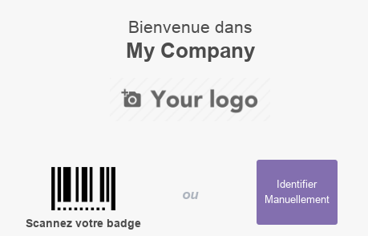
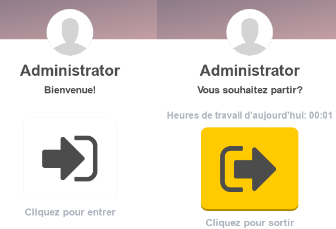

Module Présence
Ce document illustre les différentes fonctionnalités du module Présences d’odoo 13 community.
Présentation du module
Ce module complémentaire au module Employés est destiné à gérer les présences/absences des employés de l’entreprise de manière efficace.

Configuration (admin)
Cette section, réservée aux administrateurs, permet de définir les paramètres généraux du module, tel que les Check-In/Out.
En effet, l’option PIN de l’employé active une fonctionnalité permettant aux GRH de définir des PIN pour chaque employé qui doivent les saisir au moment du pointage.
Gestionnaire
Cette section est déstinée aux Gestionnaires des Ressources Humaines.
Présences
Cette section basique, permet de vérifier et corriger si nécessaire les heures d’arrivées/sortie de tous les employés.

Employés
Cette section est la même que celle du module Employés.
Mode kiosque
Cette fonctionnalité est généralement activé par le GRH sur un ou plusieurs postes dédiés à partir desquels les employés peuvent pointer (entegister leurs arrivées/départs), que çà soit en scannant un badge ou en s’identifiant manuellement. Si l’option PIN de l’employé est activé le PIN est exigé pour le pointage.

Check in / Check out
Cett interfaçe permet aux utilisateurs d’Odoo d’enregister leurs l’heurs d’arrivée et de départ sur une interface ludique et simple.

Analyse
La partie analyse permet aux GRH de visualiser des vues synthétiques sous différentes formes (listes, tableau croisé ou graphes) de la situation des présences des employés.
Workflow

Plus de détails
Pour la collaboration sur les formulaires de ce module, consulter la fonctionnalité conversations.